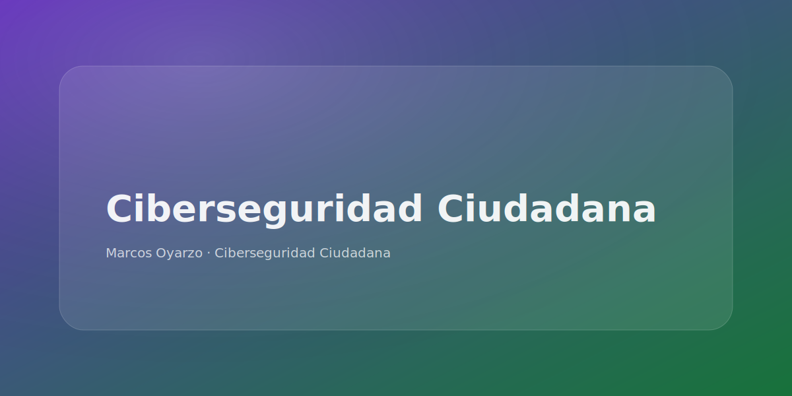

Ciberseguridad Ciudadana (núcleo)
Prevención de estafas y hábitos seguros en lenguaje humano.
- Charlas y seminarios (phishing, fraudes, suplantación, cuentas tomadas).
- Talleres prácticos: contraseñas, MFA, backups, privacidad y configuración.
- Materiales: checklist + guía defensiva + plan por niveles.